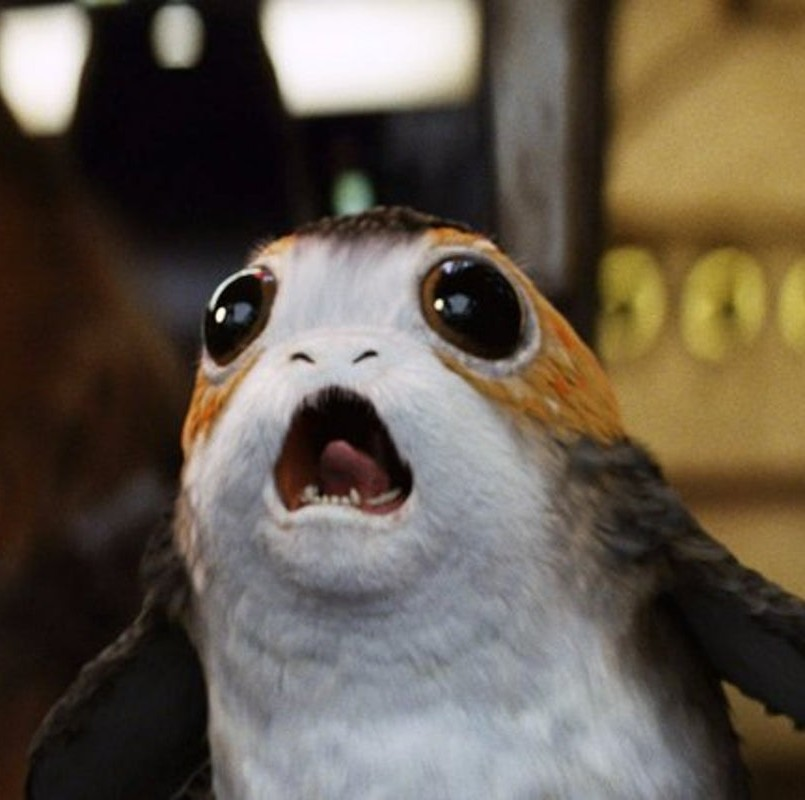
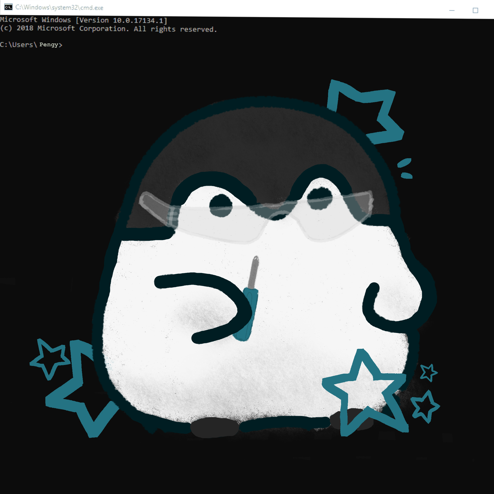

Origin of apinguen

This is what a porg is btw
apinguen was not always named apinguen. For a while, apinguen was known as porg22 (after the Star Wars animal). A few years later, apinguen realized that having random numbers on the end of the name was a bit boring. Hence porg22 became AgentPorg because like secret agent and cool stuff like that. A year or two passed, and apinguen realized that "agent" was kinda weird and having a username based off a fictional bird was not the best long-term choice.

Accurate picture of apinguen today
So apinguen settled down one day to decide on a new standardized username. He decided to do it based off an animal, because he didn't have any other good ideas, and like, animals. But penguin is 7 letters, and what about platforms that have a minimum length of 8 characters? So "a" was added on, and it still kinda made sense because "a penguin". And obviously "apenguin" is probably going to already be taken on most platforms, so the e and i were swapped, making "apinguen".